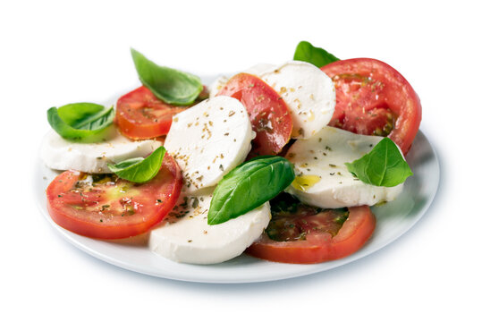

Caprese Salad

Description
Caprese Salad is a fresh and simple Italian salad made with ripe tomatoes, mozzarella cheese, and basil. It’s a perfect dish for summer or as a light starter.
Ingredients
- 2 ripe tomatoes
- 200g fresh mozzarella
- Fresh basil leaves
- Extra virgin olive oil
- Balsamic vinegar (optional)
- Salt and pepper to taste
Steps
- Slice the tomatoes and mozzarella into even slices.
- On a serving plate, alternate slices of tomato and mozzarella, arranging them in a circular pattern or in rows.
- Tuck fresh basil leaves between the tomato and mozzarella slices.
- Drizzle with extra virgin olive oil and, if desired, a little balsamic vinegar.
- Season with salt and freshly ground black pepper.